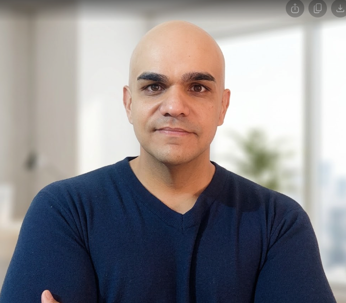
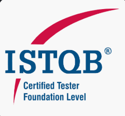
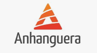

Do refinamento da história até a homologação — atuo em todo o ciclo de qualidade de software, conectando visão de produto, engenharia e entrega contínua.
Minha atuação não começa nos testes — começa no entendimento do problema. Participo ativamente do refinamento, defino critérios junto ao PO e só então construo a automação que valida cada premissa levantada.
# Exemplo de critério de aceite elaborado durante refinamento com o PO Feature: Autenticação segura de usuário # Regra de negócio: conta bloqueada após 3 tentativas inválidas Scenario: Login com credenciais válidas Given que o usuário está na tela de login When ele informa e-mail "victor@empresa.com" e senha "Senha@123" And clica em "Entrar" Then deve ser redirecionado ao Dashboard And o token JWT deve estar presente nos cookies Scenario: Bloqueio após 3 tentativas inválidas Given que o usuário realiza 3 tentativas com senha incorreta Then a conta deve ser bloqueada por 15 minutos And um e-mail de alerta deve ser enviado ao usuário Scenario: Tentativa de login com conta inativa # fluxo de exceção Given que o usuário possui conta com status "INATIVA" When tenta realizar login Then deve ver a mensagem "Conta inativa. Contate o suporte." And o HTTP status da API deve ser 403
Principais entregas em cada empresa, com foco em impacto técnico e de negócio.
Portfólio técnico público com exemplos reais de automação em múltiplas ferramentas e camadas.
Ferramentas que uso no dia a dia para garantir qualidade em todo o ciclo de entrega.


Disponível para oportunidades, projetos e conversas técnicas.